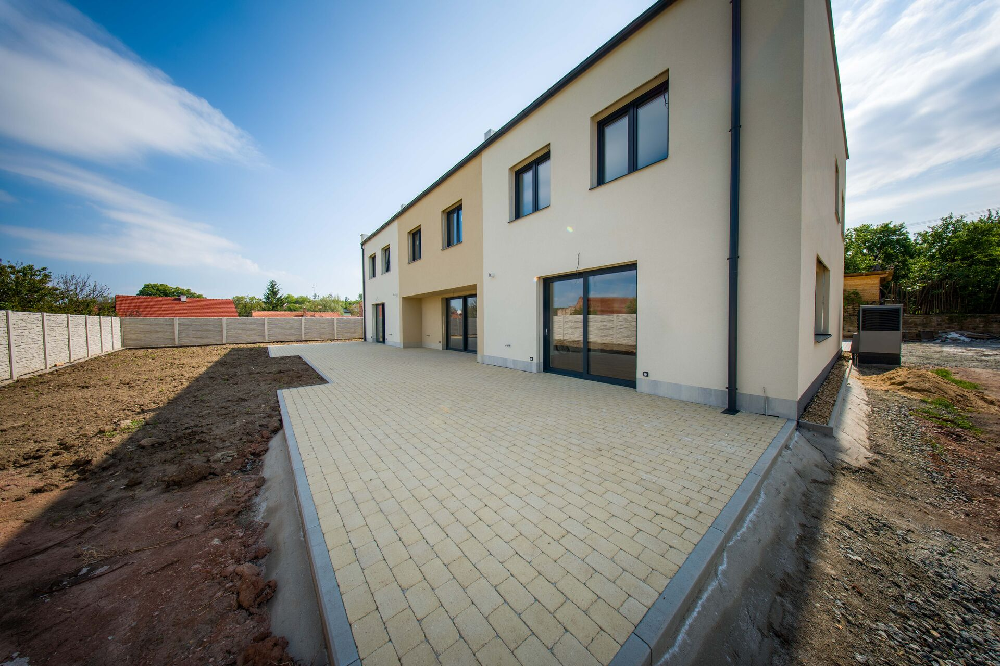
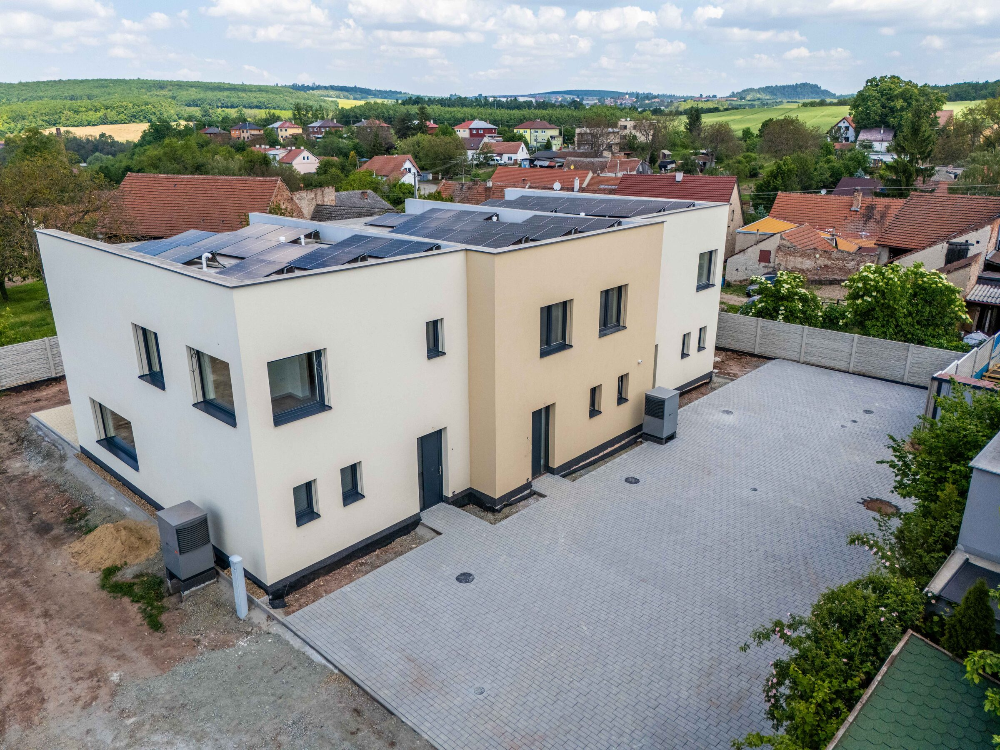
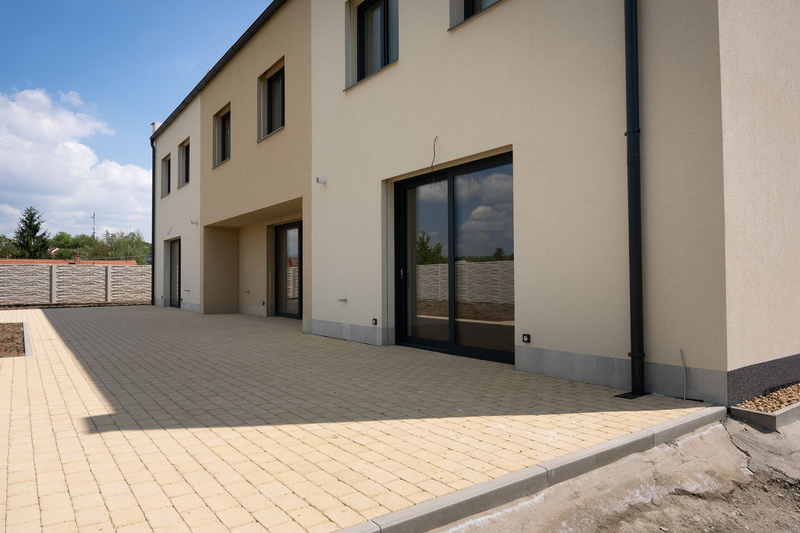
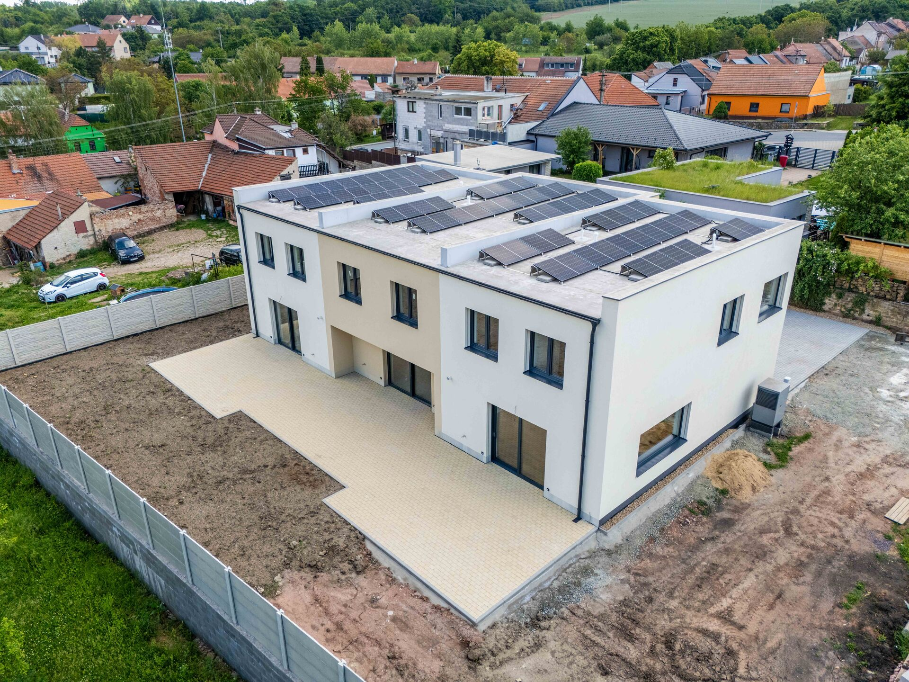
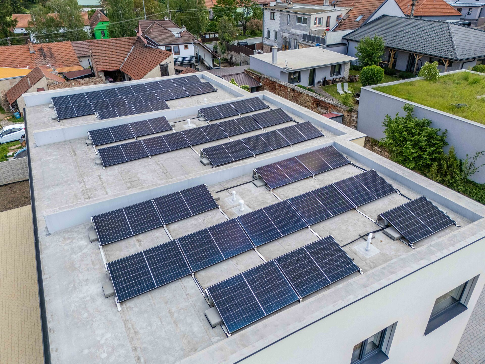

Získejte více informací o developerském projektu Rezidence Padochov. Prohlédněte si standardy a zjistěte, jaké jsou možnosti financování nákupu nemovitosti.

Prohlédněte si kompletní standardy provedení domů v projektu Rezidence Padochov.
StandardyZjistěte možnosti financování nákupu nemovitosti a hypotečního poradenství. Pomůžeme vám nastavit nejvýhodnější variantu financování vašeho nového domova.
Filip Vašíček
Specialista na financování a hypotéky
Provede vás financováním koupě domu v Rezidenci Padochov — od výběru hypotéky až po nastavení té nejvýhodnější varianty.


Za celým projektem stojí Tomáš Vašíček, spolumajitel společnosti Money2You, která dlouhodobě působí v oblasti financí, a také Reality2You, zaměřené na kompletní realitní služby. Dalším pilířem jeho podnikání je development, ve kterém se Tomáš pohybuje již bezmála deset let.
Tento projekt je už čtvrtým developerským záměrem, za kterým stojí. Dlouholetá praxe, znalost trhu a spolupráce s ověřenými dodavateli vytváří stabilní základ pro kvalitní práci a poctivý přístup ke každému detailu. Hlavním cílem je vytvářet moderní, funkční a dlouhodobě udržitelné bydlení.
Myšlenka na výstavbu dvou rodinných trojdomů vznikla prakticky ihned po koupi pozemku — jedinečného místa v klidné části obce, které si o rezidenční projekt přímo říkalo.
Velkou přidanou hodnotou je mateřská školka hned vedle, což dělá z lokality ideální prostředí pro rodiny s dětmi. Stejně zásadní byla také výborná dojezdová vzdálenost — nejen do Brna, ale i do Ivančic, které jsou dostupné během pár minut.
Domy jsou navrženy s důrazem na nízkou energetickou náročnost, používají kvalitní materiály, moderní technologie a drží se jednoduché a elegantní architektury v přírodních barvách, která přirozeně zapadá do okolního prostředí.

